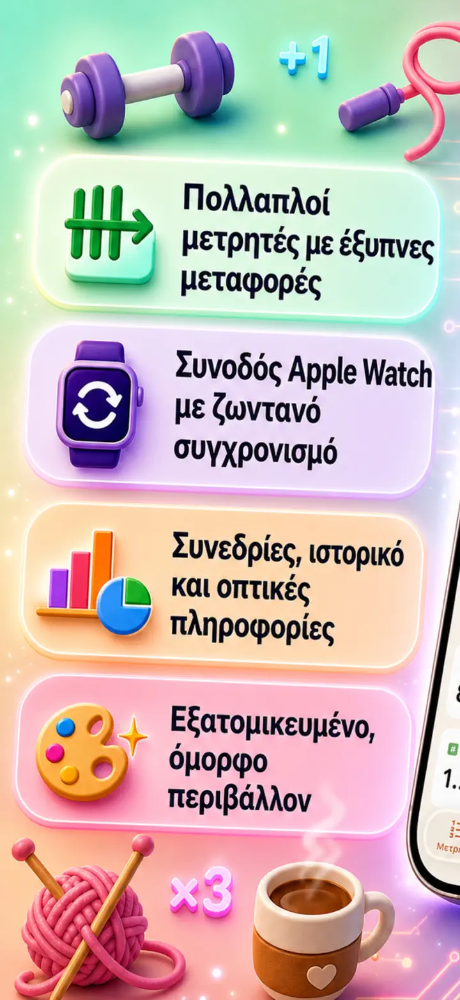
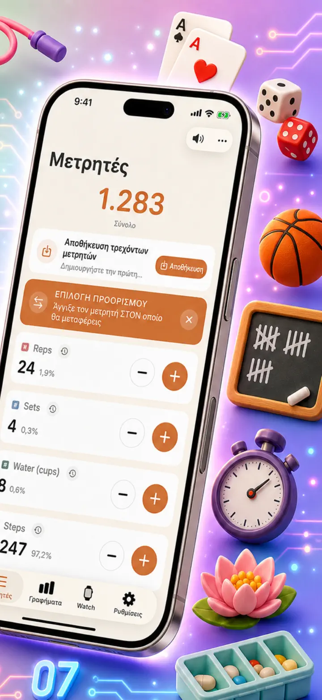
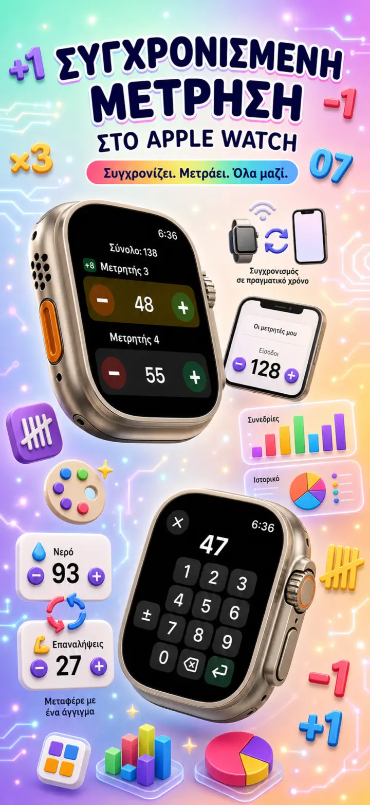
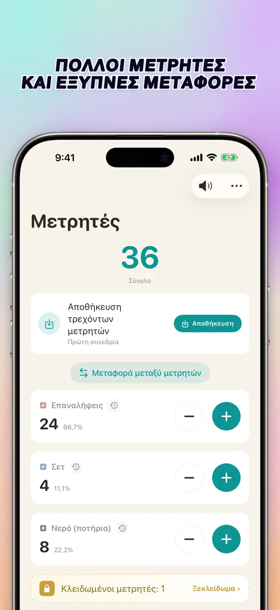
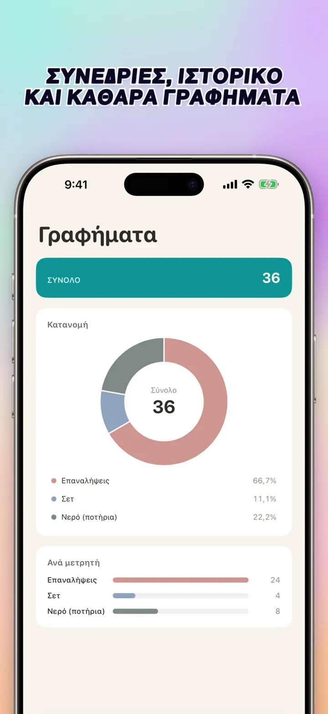
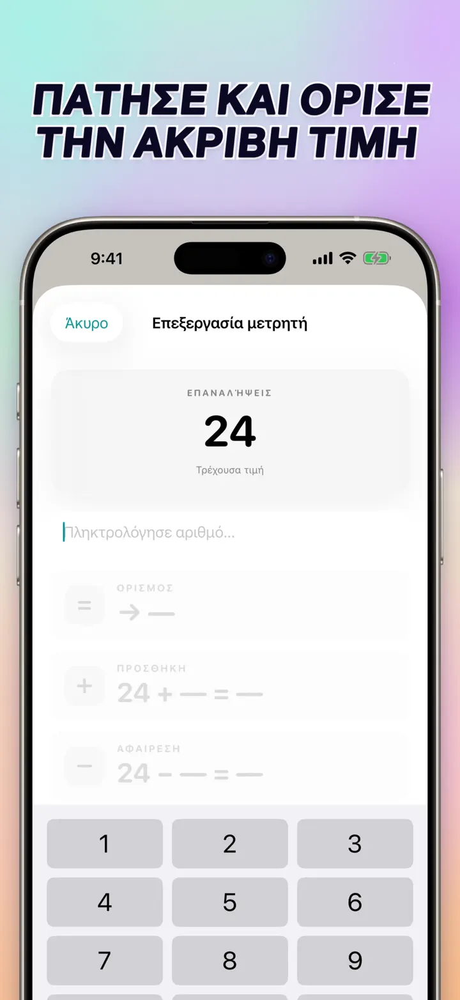
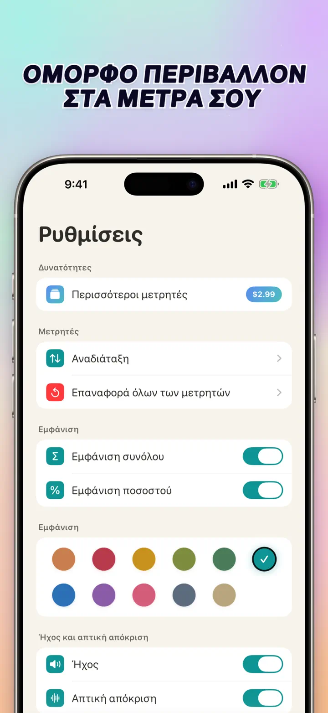
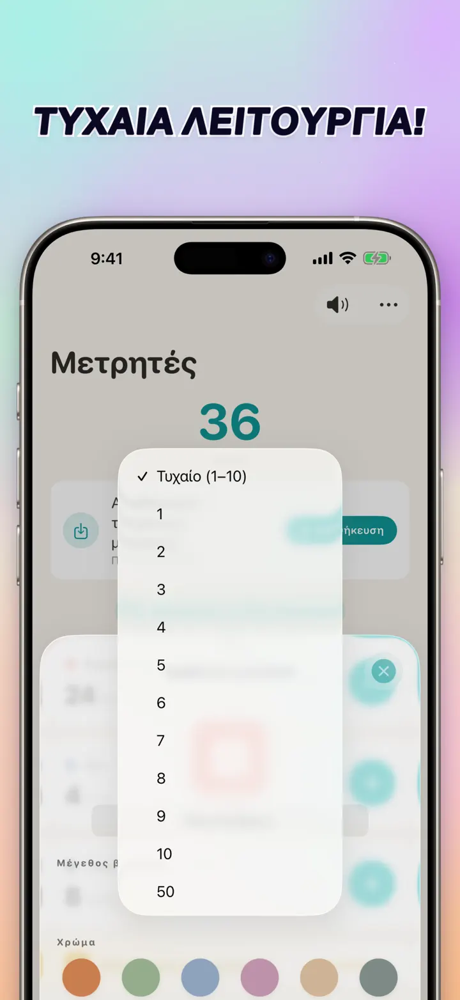

Μετρητής 123
Sync Watch, κλικ, σκορ
Νέο: Widget στην οθόνη Αφετηρίας — άγγιξε +/- στο widget χωρίς να ανοίξεις την εφαρμογή. Μετρητής/clicker, Apple Watch sync, τυχαία λειτουργία, γραφήματα, ιστορικό.
Λήψη από το App Store
Σχετικά με την εφαρμογή
Το Μετρητής 123 είναι ο γρήγορος και ευέλικτος μετρητής για iPhone, iPad και Apple Watch. Ονόμασε τους μετρητές σου, διάλεξε χρώμα και μέτρα οτιδήποτε — σετ στο γυμναστήριο, σειρές πλεξίματος, κομποσκοίνι, βαθμούς στην τάξη, απόθεμα, σκορ παιχνιδιού. Όλα μένουν τοπικά στη συσκευή και δουλεύουν χωρίς σύνδεση.
ΠΡΟΣΑΡΜΟΣΜΕΝΟΙ ΜΕΤΡΗΤΕΣ
- Δημιούργησε ξεχωριστούς μετρητές για δραστηριότητες, παιχνίδια, ρουτίνες ή λίστες
- Ξεχωριστό όνομα και χρώμα για καθέναν
- Σύρε για αναδιάταξη
- Κράτα πατημένο για γρήγορη συνεχόμενη μέτρηση
- Πλήρως χωρίς σύνδεση — χωρίς εγγραφή, χωρίς cloud
ΑΠΕΥΘΕΙΑΣ ΚΑΤΑΧΩΡΗΣΗ & ΜΑΖΙΚΕΣ ΕΝΕΡΓΕΙΕΣ
- Άγγιξε έναν μετρητή για να ορίσεις αρχική τιμή κατευθείαν — δεν χρειάζεται μηδενισμός
- Μαζικό +/-: άλλαξε έναν μετρητή με οποιονδήποτε αριθμό με ένα άγγιγμα
- Μεταφορά: πέρνα μια τιμή από τον έναν μετρητή στον άλλον χωρίς διπλή κίνηση
- Προσαρμοσμένο βήμα: ένα άγγιγμα προσθέτει 1, 5, 10, 100 ή ό,τι ορίσεις
- Ζωντανή προεπισκόπηση κάθε αλλαγής
ΤΥΧΑΙΑ ΛΕΙΤΟΥΡΓΙΑ
- Ο μετρητής δίνει νέα τιμή από 1 έως 10 σε κάθε πάτημα
- Πρόσθεσε ή αφαίρεσε τυχαίες τιμές με τα κουμπιά + και -
- Χρήσιμο για ασκήσεις, παιχνίδια, ανταμοιβές, τάξη και πρακτική
- Κάθε τυχαίο πάτημα αποθηκεύεται στο ιστορικό
ΣΥΝΟΛΑ & ΓΡΑΦΗΜΑΤΑ
- Συνολικό άθροισμα όλων των μετρητών με μια ματιά
- Προβολή ποσοστού: πόσο συνεισφέρει ο καθένας στο σύνολο
- Διαδραστικό ραβδόγραμμα — εναλλαγή ανάμεσα σε τιμή (#) και ποσοστό (%)
- Ταξινόμηση κατά τιμή για άμεση κατάταξη
ΙΣΤΟΡΙΚΟ & ΚΟΙΝΟΠΟΙΗΣΗ
- Πλήρες ιστορικό: κάθε πρόσθεση, αφαίρεση και επεξεργασία καταγράφεται
- Αποθήκευσε σετ μετρητών και φόρτωσέ τα ξανά ανά πάσα στιγμή
- Μοιράσου ρυθμίσεις με ομάδα, μαθητές ή φίλους
ΖΩΝΤΑΝΟΣ ΣΥΓΧΡΟΝΙΣΜΟΣ ΜΕ APPLE WATCH
- Άλλαξε μετρητή σε iPhone ή Apple Watch και οι τιμές μένουν συγχρονισμένες
- Γνήσια εγγενής εφαρμογή watchOS — όχι απλό συνοδευτικό
- Ονόματα, χρώματα και τιμές συγχρονισμένα στον καρπό
- Άγγιξε για μέτρηση, κράτα για επανάληψη — απευθείας από το ρολόι
- Δουλεύει ανεξάρτητα όταν το iPhone δεν είναι κοντά
ΓΙΑ iPhone, iPad & APPLE WATCH
- Προσαρμόσιμες διατάξεις για κάθε μέγεθος οθόνης
- Το iPad δείχνει περισσότερους μετρητές μαζί, υποστηρίζει Split View
- Ιδιωτικότητα πρώτα: τοπική αποθήκευση, χωρίς cloud, χωρίς λογαριασμό
ΙΔΑΝΙΚΟ ΓΙΑ
- Σετ και επαναλήψεις στο γυμναστήριο
- Σειρές πλεξίματος και βελονιές βελονακιού
- Κομποσκοίνι, τασμπίχ, χάντρες προσευχής
- Πόντοι στην τάξη και απουσιολόγιο
- Μπάσκετ, βόλεϊ, χάντμπολ — γρήγορο σκορ
- Πινγκ πονγκ
- Απόθεμα και μέτρηση αποθήκης
- Επιτραπέζια, χαρτιά, πρέφα, μπιρίμπα
- Γύροι στην πισίνα και στην πίστα
- Παρατήρηση πτηνών
- Μέτρηση κόσμου σε εκδηλώσεις
- Παρακολούθηση συνηθειών και στόχων
Κατέβασε το Μετρητής 123 και κάνε κάθε μέτρηση εύκολη — καθαρά, γρήγορα, ιδιωτικά.
Πολιτική απορρήτου: https://masawata.net/privacy-policy.html Όροι χρήσης: https://www.apple.com/legal/internet-services/itunes/dev/stdeula/
Στιγμιότυπα οθόνης







Μετρητής 123
Νέο: Widget στην οθόνη Αφετηρίας — άγγιξε +/- στο widget χωρίς να ανοίξεις την εφαρμογή. Μετρητής/clicker, Apple Watch sync, τυχαία λειτουργία, γραφήματα, ιστορικό.
Λήψη από το App Store